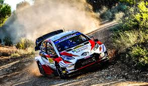
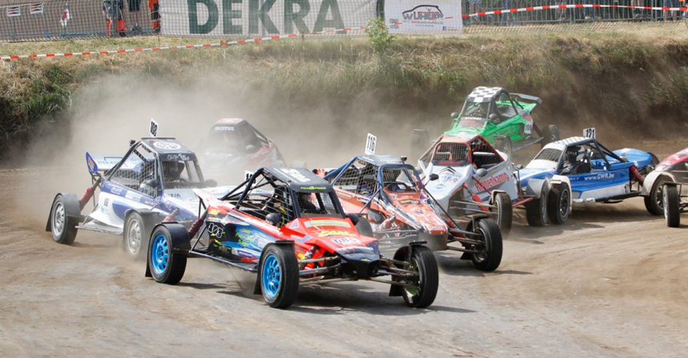
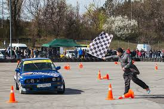
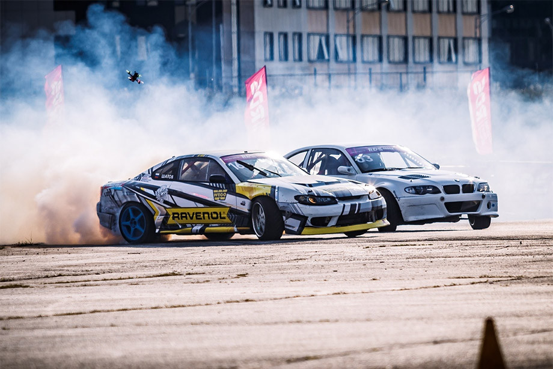
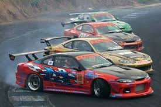
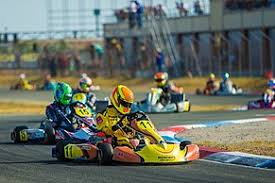

Виды автогонок
Ралли
Ралли — вид автогонок, проходящих на открытых или закрытых трассах на модифицированных или специально построенных автомобилях. Этот вид гонок отличается тем, что заезды главным образом прокладываются по автомобильным дорогам общего пользования, в формате «из пункта A в пункт B» с прохождением контрольных точек. Пилоты едут на максимальной скорости только на специально перекрытых скоростных участках (их обычно называют СУ или ДОП). А от одного спецучастка до другого раллисты передвигаются, соблюдая все правила дорожного движения и за строго определенный временной норматив.
Автокросс
Автокросс — гонки с совместным стартом на кольцевой трассе с грунтовым покрытием. Проводятся круглогодично. Особенно популярны в постсоветских странах, а также в целом ряде европейских стран: Чехии, Германии, Голландии, Франции и др.
Особенности классического автокросса:
- зрителям видна вся трасса или бо́льшая её часть
- гонщики соревнуются непосредственно друг с другом, а не на время
- часто происходит контактная борьба между автомобилями участников заездов
- неровности поверхности, ямы, трамплины, спуски и подъёмы присутствующие на автокроссовых трассах добавляют привлекательности
Автослалом
- зрителям видна вся трасса или бо́льшая её часть
- гонщики соревнуются непосредственно друг с другом, а не на время
- часто происходит контактная борьба между автомобилями участников заездов
- неровности поверхности, ямы, трамплины, спуски и подъёмы присутствующие на автокроссовых трассах добавляют привлекательности
Автослалом
Автослалом — гонки на время по размеченной стойками (конусами, покрышками) территории со сложной трассой (крутые повороты, змейки, развороты на 180 градусов задним и передним ходом, и т. п.).
Особенности
Водителю необходимо хорошо чувствовать габариты своего автомобиля, уметь маневрировать задним ходом, точно дозировать тягу на ведущих колёсах, выбирать самую лучшую траекторию движения, владеть приёмами стабилизации и скоростных разворотов. Благодаря низким скоростям и отсутствию твёрдых препятствий автослалом в основном проводится на серийных автомобилях (без каркасов безопасности), гонщик пристёгнут обычным трехточечным ремнём, иногда обязательным является наличие шлема. В современном автослаломе на трассе одновременно могут находиться как один, так и два автомобиля. В бывшем Советском Союзе его придумали для профессиональных гражданских водителей, чтобы стимулировать повышение навыков управления автомобилем. Для участников, причём не только спортсменов, а и простых любителей, разработали несколько типовых «фигурок», например, «бокс», «дворик» или «колодки», которые фактически воспроизводили наиболее проблемные случаи, возникающие в обычных городских условиях.
Характер и цели соревнований
- Автослалом — это скоростное маневрирование на автомобилях с выполнением сложных элементов фигурного вождения в ограниченном пространстве.
- Автослалом относится к так называемым «моно» соревнованиям в которых спортсмены соревнуются по очереди, то есть на трассе всегда находится только один автомобиль.
- Участник соревнований старается пройти трассу за наименьший промежуток времени и с наименьшим количеством ошибок за каждую из которых начисляется штрафное время.
Дрифт
Дрифт - это высокотехничный вид автоспорта, родоночальником которого выступает страна восходящего солнца, откуда данная дисциплина устремилась покорять новые земли, проделав громадный путь от неформальных тусовок до высокопрофессионального чемпионата D1.
История возникновения дрифта
Изначально дрифт как спорт появился в Японии. Так как дрифтинг начал развитие сразу в нескольких городах Японии, то точное место его рождения определить нельзя. В истории происхождения дрифта известны такие горные перевалы, как Ирохазака, Роккосан, Хаконе и все возможные холмистые дороги в Нагано.
Современный дрифт, как и большинство профессиональных гонок, во время своего зарождения проводился нелегально. Гонки проходили на извилистых загородных дорогах, которые назывались «Тогэ». Самых увлеченных энтузиастов называли «Роллинг зоку», они-то и состязались на Тогэ. Изначально занос не был обязательной частью Тогэ, но, в основном из видеозаписей ралли, гонщики поняли, что на узкой и извилистой дороге проходить повороты в управляемом скольжении быстрее всего. Гонки тоге делятся на две части: uphill и downhill. На таких узких трассах обгон почти не возможен, поэтому гонки представляют собой преследование, в которых цель лидера — к финишу увеличить первоначальное расстояние между машинами, а преследователя — уменьшить его. В местах, где ширина дороги позволяет выстроить в ряд на старте 2 машины, гонки проходят по классическим правилам. Усложненной версией Тогэ является «гонка со скотчем», где одна рука водителя привязана к рулю. Часть Роллинг зоку стали применять технические приемы вождения раллистов, приемы прохождения поворотов быстро и без потери инерции. С использованием раллийной техники прохождения поворотов водители на Тогэ начали замечать, что уровень владения машиной и время прохождения улучшились, при этом гонка стала напряженней. Именно на Тогэ зародился дрифт.
В США дрифт пришёл в 1996 году. Так как во многих штатах были запрещены доработки автомобилей, намеренная пробуксовка шин (англ. burnout) и уличные гонки, то соревнования проходили на закрытых трассах.
Основные правила
Существует два типа заездов: одиночные и парные. Победитель обычно определяется в нескольких заездах. В одиночных заездах судьи начисляют гонщику определённое количество очков в зависимости от скорости, траектории, угла заноса и зрелищности заезда в целом. В парных заездах первый участник должен проехать оцениваемый участок в соответствии с заданием (чаще всего по максимально правильной траектории), задачей второго участника является как можно сильнее приблизиться к своему сопернику во время движения в заносе, делать синхронные перекладки. Для определения победителя совершается два заезда, во втором заезде правила те же, но противники меняются местами. Победителем является тот пилот, который проехал ближе и лучше, будучи «догоняющим». Также, если оба заезда были безупречными или количество ошибок обоих пилотов суммарно одинаковое, судьи могут назначить повторный заезд.
Судейство
При оценке выступления гонщика учитывается несколько параметров:
- траектория прохождения оцениваемого участка трассы — существуют специально обозначенные судьями точки (участки, траектория, зоны), проезжая рядом с которыми водитель может получить максимальное количество очков, или получить штрафные очки — совершая ошибки;
- угол заноса при движении по оцениваемому участку — чем больше, тем выше оценка;
- скорость движения;
- зрелищность и стиль (оценивается дополнительно).
Если участники не смогли превзойти один другого, то проводится ряд дополнительных заездов, пока превосходство не будет очевидным. При этом, если зрители не согласны с вынесенным судьями решением, они могут его опротестовать возгласами и неодобрительным гулом.
Картинг
Картинг — вид спорта и развлечения, гонки на картах — простейших гоночных автомобилях без кузова. Скорость карта (класс «Суперкарт») может достигать 260 км/ч.
История
Считается, что картинг придумали военные лётчики в США после Второй мировой войны. Они устраивали гонки по лётному полю на тележках для подвоза авиабомб. Но это хобби было распространено лишь в узких кругах, пока за дело не взялся Арт Инглс[en], бывший пилот, механик отделения фирмы «Кёртис крафт компани» в Глендейле, которая выпускала гоночные автомобили. В августе 1956 г. на автогонках в Помоне он представил публике несложный карт. Машину назвали тележкой (англ. cart).
В 1957 г. Билл Роулс, Даффи Ливингстон и Рой Десброу (англ. Bill Rowles, Duffy Livingstone, Roy Desbrow) создают компанию Go-Kart Company, производящую карты. Дела компании шли настолько успешно, что ей удалось купить участок в 5 акров, на котором был построен первый картодром. Одновременно Инглс основывает компанию Ingels-Borelli.
В 1958 г. английский бизнесмен Микки Флин заказывает у Go-Kart пять картов. Уже в 1960 году в Великобритании насчитывается свыше 100 фирм, занимающихся производством картов и комплектующих. С февраля 1960 г. в Великобритании начинает издаваться журнал «Karting».
В мае 1960 г. Международная федерация автоспорта официально признала картинг видом автоспорта. В 1962 г. была создана Международная комиссия по картингу при Международной федерации автоспорта (CIK FIA). В 1964 г. в Риме проводился первый чемпионат мира по картингу с двигателями объёмом 100 см³ (картинг стал вторым видом автоспорта, по которому проводится чемпионат мира, после «Формулы-1»).
Именно благодаря простоте и дешевизне картинг в первые годы его существования приобрёл бешеную популярность. Но к 1962 году бум на картинг закончился. Количество фирм-производителей упало. Карты стали мощнее и совершеннее, но и дороже. На смену простейшим рамам из водопроводных труб пришли конструкции с тщательно просчитанной упругостью. Повышение скоростей потребовало повышения безопасности. Как и в любом другом техническом виде спорта, в картинге остались профессионалы.
В 2007 году CIK предприняла попытку возвратить картингу дух 1960-х годов, сведя любителей и профессионалов. Была опубликована спецификация на единый картинговый двигатель серии KF, который (с разными электронными блоками, карбюраторами и т. д.) применяется во всех классах картов без коробки передач. Об успехе или неудаче этого начинания можно будет говорить лишь через несколько лет.Карт, ввиду его небольшой массы, часто применялся для побития рекордов скорости на машинах с малым объёмом двигателя, а также для экспериментов с необычными силовыми установками.